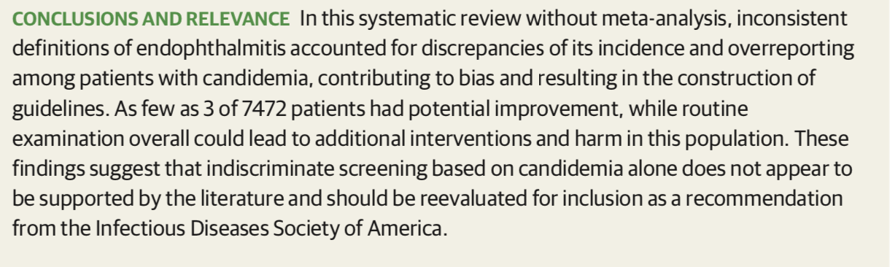
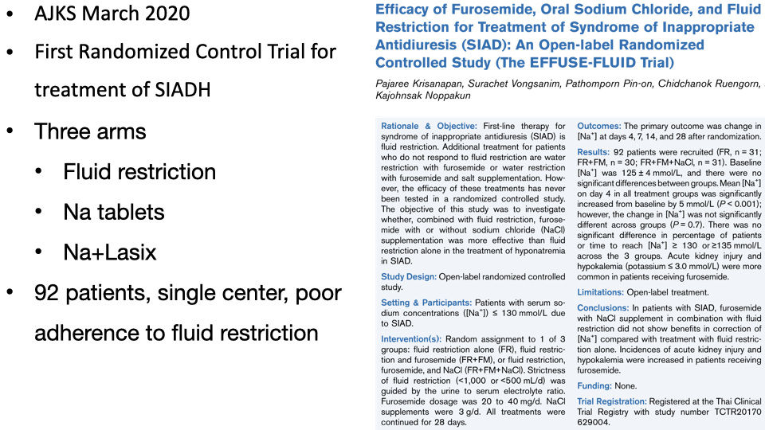

# Gen Med Notes
### Candidemia / Optho Eval - Pro: Uptodate and ISDA - Pro: may change duration/route, not always symptomatic - Cons: Optho literature (here) - Cons: endophthalmitis vs chorioretinitis - Cons: prevalence endophthalmitis <1% - Cons: no evidence to support improved outcomes - Cons: guideline based old data prior to fluconazole

